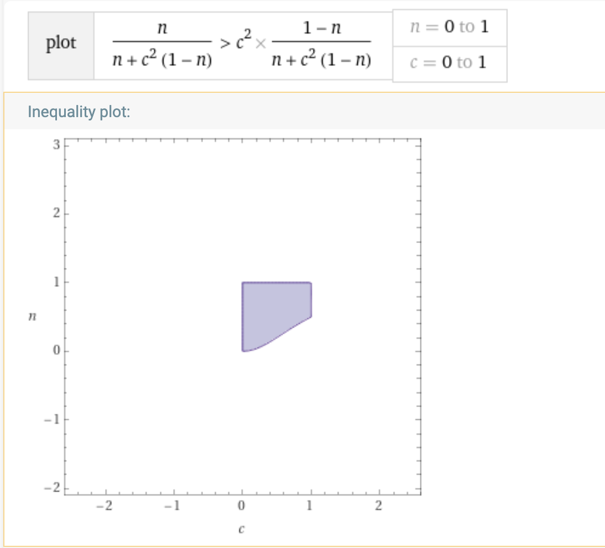
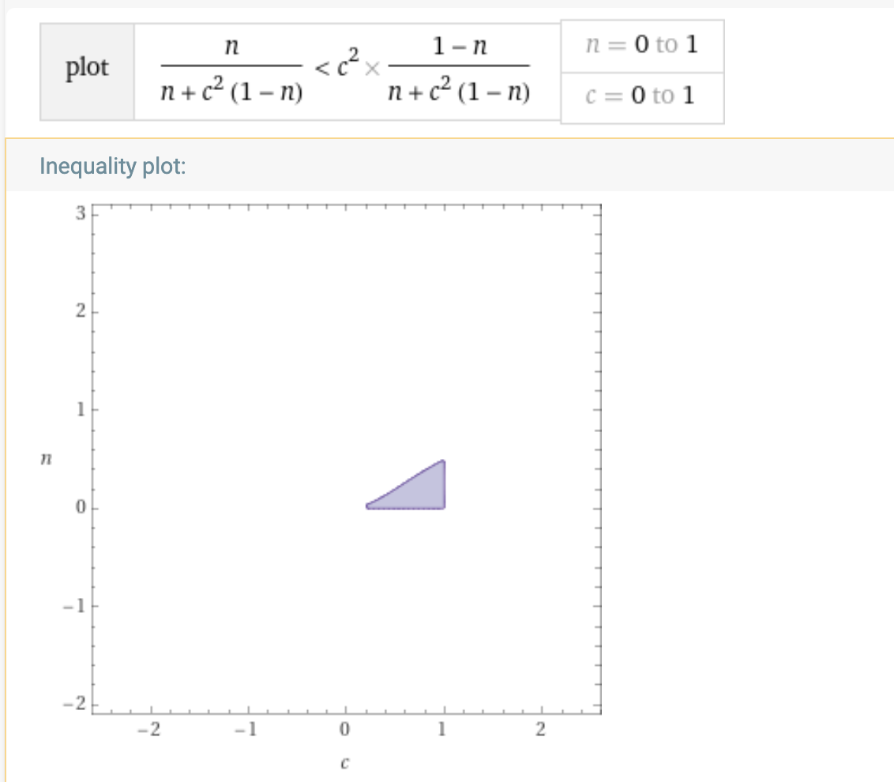

The Question
An estimator is any function $ f : \{1,2\} \rightarrow \{1,2\}$ that assigns to each measurement outcome $i \in \{1,2\}$ a guess $f(i) \in \{1,2\}$ regarding which state the electron's spin was in. Using your results in (iii) tell me your guess for each possible measurement outcome. This estimation is known as the Maximum Likelihood Estimator (MLE).
The Answer
Let's use probabilities.
So given a result $\Pi_i$ we have to "bet" for wich is the state with a higher probability for producing it. So, we have to find the bigger between:
- If we obtain $\Pi_1$ we have to check which is bigger:
- $P(\Psi_1|\Pi_1) = {\eta \over {\eta + c^2(1-\eta)}}$
- $P(\Psi_2|\Pi_1) = {c^2(1-\eta) \over \eta + c^2(1-\eta)}$
- If we obtain $\Pi_2$ we have to check which is bigger
- $P(\Psi_1|\Pi_2) = 0$
- $P(\Psi_2|\Pi_2) = 1$
From that we can observe:
- If the outcome is $\Pi_1$ then the best strategy can be $\Psi_1$ or $\Psi_2$ depending on $c$ and $\eta$.
- If the outcome is $\Pi_2$ then it is clear that the strategy is $\Psi_2$.
Let's analyze with more detail the possibilities when $\Pi_1$:
Bet for $\Psi_1$
In that case $P(\Psi_1|\Pi_1) > P(\Psi_2|\Pi_1) \rightarrow {\eta \over {\eta + c^2(1-\eta)}} > {c^2(1-\eta) \over \eta + c^2(1-\eta)}$.
The graph can be found here

Bet for $\Psi_2$
In that case $P(\Psi_1|\Pi_1) < P(\Psi_2|\Pi_1) \rightarrow {\eta \over {\eta + c^2(1-\eta)}} < {c^2(1-\eta) \over \eta + c^2(1-\eta)}$.
The graph can be found here

From the graphics we can see there are combinations of $c$ and $\eta$ where $\Psi_1$ is the best options and other when $\Psi_2$ is bettter, but acording the resolution of the exercise (and checking the likelihoods instead the probabilitites) when getting $\Pi_1$ we have to choose $\Psi_1$:
In fact this can be checked easily using likelihood instead probabilities becuse in this case for the case $\Pi_2$ we have to check which is bigger:
- $L(\Psi_1|\Pi_1) = 1$
- $L(\Psi_2|\Pi_1) = c^2 $
and in that case no doubt, $\Psi_1$ is better
but we don't understand the use of the likelihood without taking into consideration the probability of producing $\Psi_1$ or $\Psi_2$; bet for $\Psi_1$ even when it the answer more probable if $\Psi_1$ is very seldom maybe is not the best strategy
An Hypothesis
Ok, taking a look to the graphics it is clear that
if we know $c$ and $\eta$ the strategy for $\Pi_1$ can vary but the fact that we chose $\Psi_1$ is because maybe we
do not know $\eta$ and in this case, taking a look to the graophics, we see the one "with more area" of success is $\Phi_1$ and then it's the best opption. Also it agrees with the use of likelihood that does not have into account $\eta$.